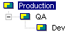
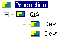

Before you define a promotion model, verify the following:
The definition of a promotion model can span multiple configuration files. Portions of the promotion model can be defined in both the master configuration file (associated with a project database) and project configuration files (associated with a project).
When a promotion model is defined in multiple configuration files, the definitions are combined; the promotion model definition in the project configuration file does not override the promotion model definition in the master configuration file. Note that conflicts between the promotion models defined in each configuration file will invalidate the promotion model.
Two examples of conflicting promotion models are presented: in the first example, the configuration files contradict each other by specifying two different lowest-level promotion group. In the second example, although the two configuration files specify the same lowest-level promotion group, a conflict occurs because the second configuration file tells the lowest-level promotion group to promote to a group other than the one specified in the first configuration file.
In the first example, you define the following promotion model in the master configuration file:
Dev QA Production
and in the project configuration file, you define the following promotion model:
Dev1 QA
In this case, the promotion model is invalid because two different lowest-level promotion groups, Dev and Dev1, each promote to QA. (QA promotes to Production, which you defined in the master configuration file.) If a definition conflicts, the promotion model becomes invalid, and you must correct the configuration (by removing the conflict) before opening the project. It is important that when you combine models from multiple configuration files that you avoid conflicts between the definitions.
In the second example, if the promotion model in the master configuration file is:
Dev QA Production, you could not define the promotion model in a project or subproject configuration file as:
Dev Production
because the conflicting promotion definition tells Version Manager conflicting things: first that Dev promotes to QA and second that Dev promotes to Production.
The Configure Project dialog box (Admin | Configure Project) displays the promotion model corresponding to the project database or project selected in the Project pane. If there is a hierarchy of projects, each defined with a promotion model, the display combines the promotion groups in each promotion model. For example, if you selected the project database, the promotion model displayed would only show the promotion groups defined in the project database. However, if you selected a project within the project database, the promotion model displayed would include the promotion groups defined in the project database and in the project.
Using the previous example, the Configure Project dialog box would display the following if you selected the project database (master configuration file):

If you selected the project, the Configure Project dialog box would display the promotion model defined in the project database and the promotion model defined in the project:

| Rules Governing Promotion Models | Defining a Promotion Model |
| Promotion and Lifecycle Management | About Promotion Models |
| Configuring Project and Project Databases | Promotion and Parallel Development |